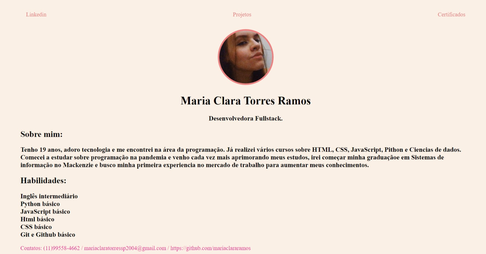
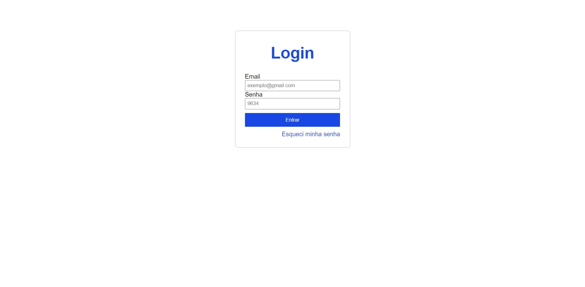
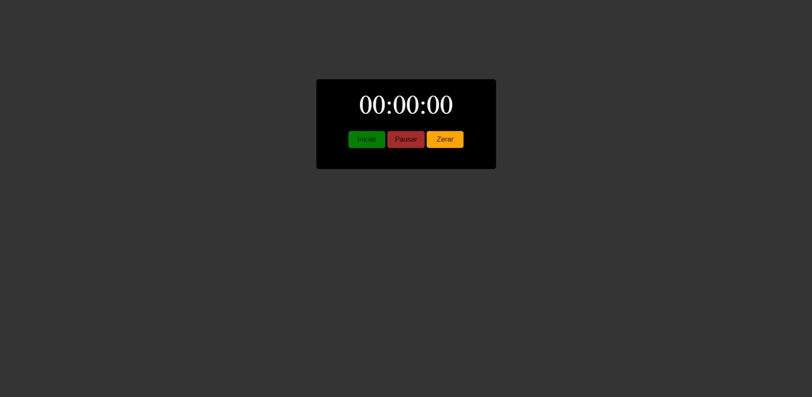

Alguns dos meus projetos:

Fiz este site ultilizando o conhecimento que adquiri com meu curso básico de html e de css. Ultilizando todas as ferramentas para o tornar funcional e interativo.

Montei ess longuin de uma página ficticia ultilizando html, css e JavaScript para dar funcionalidade aos botões.

Este cronometro digital foi criado apartir do html, css e JavaScript. Todos os seus botões exercem suas finalidades.